正反手胸椎随挥篇
Bilibili 原课 · 叶修鸽哥 · 合集第 18/35 集 · 时长 04:02 · 整理日期 2026-11-05 · 发布日期 2025-04-03
课程总结
本课在前面击球动作的基础上继续练随挥。正手从落地、胸部转动、延伸与屈肘接到绕头随挥，反手练落地后抬大臂及展开胸部。
技术总结
- 正手击球后接落地，让胸部继续转出。
- 正手延伸后屈肘回收，手可以继续向上。
- 双反落地后继续抬大臂并展开胸部。
- 关闭站位也给击球后的动作留出展开空间。
训练路线
- 先用慢速示范练正手落地、延伸和向上随挥。
- 用搭档抛球接上正手绕头随挥，再观察加力后的随挥空间。
- 转入反手，练抬大臂、胸部展开，再接双反喂球。
常见问题与调整
| 情况 | 调整方式 |
|---|---|
| 反手随挥时用挺肚子代替胸部展开 | 回到慢速动作，练抬大臂和让肩部继续转出。 |
| 正手击球后动作停在身前 | 先找回延伸与屈肘，再接向上随挥。 |
按时间顺序的课程记录
00:00–00:43｜在前面动作基础上，把随挥继续做完
讲师先要求循序渐进，前面的课学好后再学这一部分。本集补充正反手随挥。他用正手短促停住的挥拍作对照，强调正手应把后续动作完成得更充分；开头提到反手可以有较短处理，不等于本集示范的充分随挥也要主动截断。
他把固定的动作终点称作容易“卡住”的位置：如果预先觉得后面没有余量，想加力时可能已经开始往后躲。其教学意图是让后续挥拍仍有路可走，使人敢于继续完成加速。“无限地挥”是这里的体感说法，并非关节可以无限旋转。
【图 01：分段示意，00:13–00:42，9 帧】图中依次可见短促挥拍、持拍说明与手势解释，跨多次讲解动作，不是一拍连续击球。
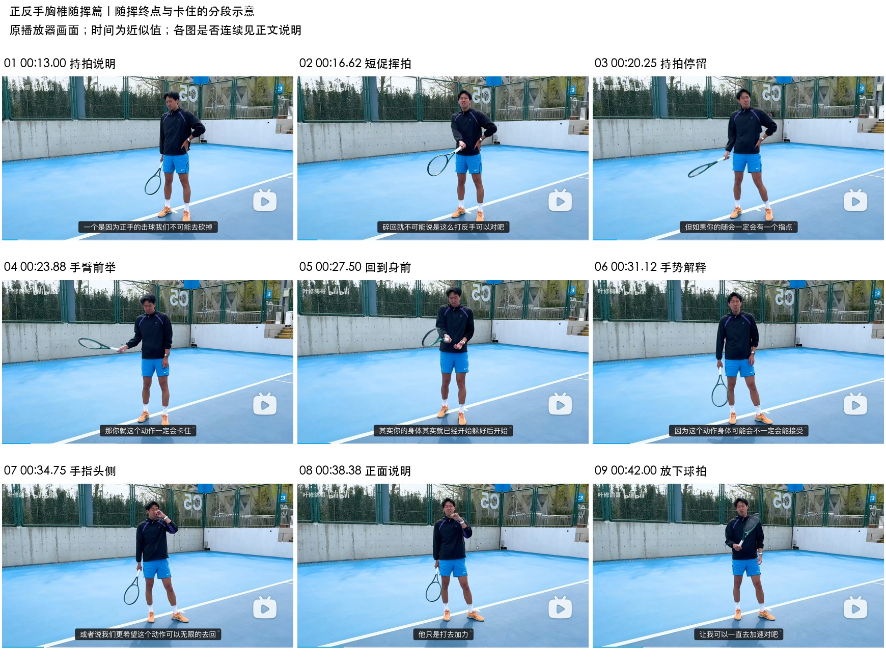
00:43–01:16｜正手：击球以后落地，让胸部进一步转出来
讲师从此前的击球方式讲起，先摆出一脚抬起、持拍向前的姿态，解释下肢及髋部位置会限制后面的继续转动。他也补充站定击球的情况；这里不是让学习者把所有球都做成同一种站位。
随后他把重点放到击球后的落地与继续随挥：下肢已有支撑以后，让上半身继续转过来，直到持拍侧的肩能够充分转出。他特意说明自己所说的重点是胸椎的转动，不只是看肩部外形。
【图 02：分段讲解，00:44–01:04，9 帧】可见抬脚、持拍向前、落脚及手指身体的位置；这些是慢速摆姿势，不是完整实战击球。
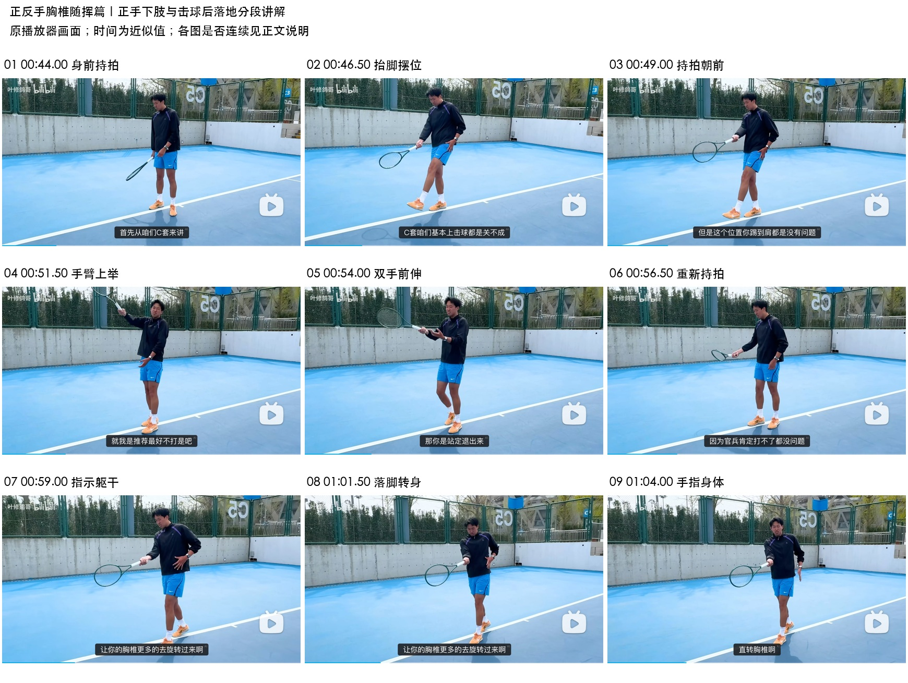
【图 03：分段示意，01:04–01:27，12 帧】先展示胸部转动后球拍绕到身体另一侧，再回到身体前方解释手臂方向；包含多次摆动。
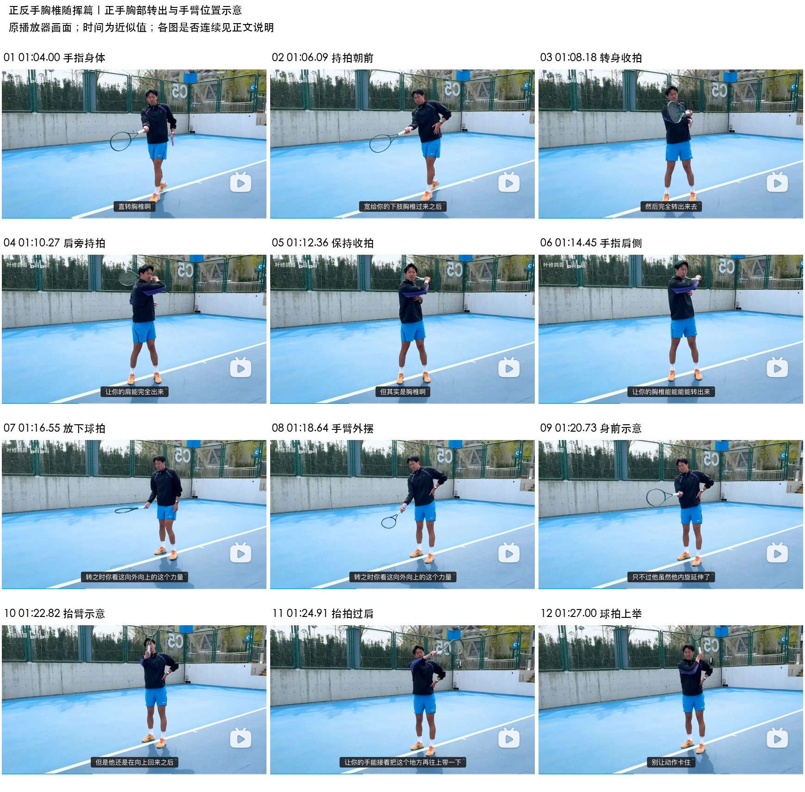
01:16–01:44｜正手：延伸、屈肘回来以后，手还可以向上带
讲师接着示意向外、向上的方向。他说此前已经讲过内旋与延伸，但后续仍能向上走；屈肘收回以后，手还可以继续把这一段向上带，使动作不在原来的位置停死，最后可以形成绕头的收拍。
他把动作分段讲成：胸前和肩部保持稳定，大臂抬起，小臂内旋并延伸，随后屈肘收回，再由手继续向上带。
【图 04：分段示意，01:28–01:44，9 帧】可见手指胸前、抬臂、球拍横过身前、继续上举和回到起点的过程；不是一次实际击球。
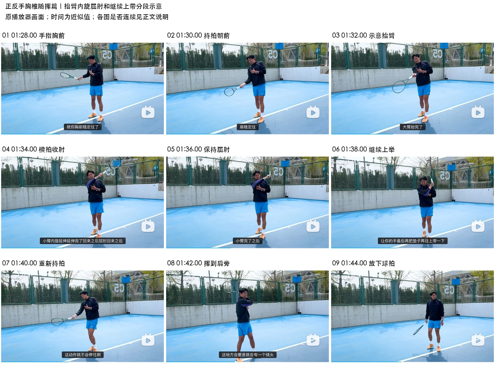
01:44–02:03｜请同伴抛球，展示正手绕头随挥
讲师请同伴抛球，期间有短暂沟通和镜头移动，约 01:49–01:55 的画面主要是空球场，不能当作动作证据。随后画面重新拍到讲师：来球到达身体前方，他完成正手挥拍，球拍上行并绕到头肩附近，再放下回位。他借此说明前面的后续收拍可以接着做出来。
【图 05：同一次抛球击球及其后续说明，01:57–02:02，15 帧】前 1–7 帧可见来球、挥拍和高位随挥，后面包含保持姿态、补做手势和放下球拍，不能把后半段全看作同一拍的惯性延续。原镜头部分时刻没有完整拍到脚部；没有逐帧确认精确触球瞬间。
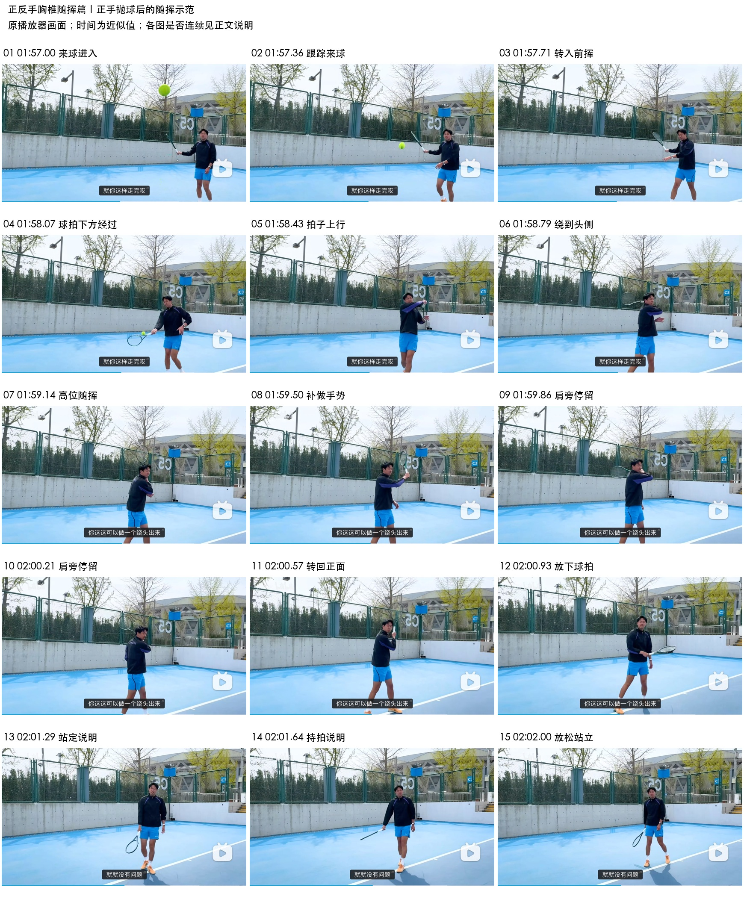
02:03–02:27｜逐级稳定与运动的体感，再请同伴给球
讲师用“一个近端稳定、一个远端动”解释自己的发力体感：靠近身体的部分先提供稳定，较远端的部分继续完成运动，从而逐步把力量释放出去。他边说边摆手臂和持拍位置，又补做挥拍，请同伴再抛球。
【图 06：分段解释，02:03–02:20，9 帧】包含持拍说明、手指身体、抬臂随挥和重新站定，不能据此证明关节动力学。
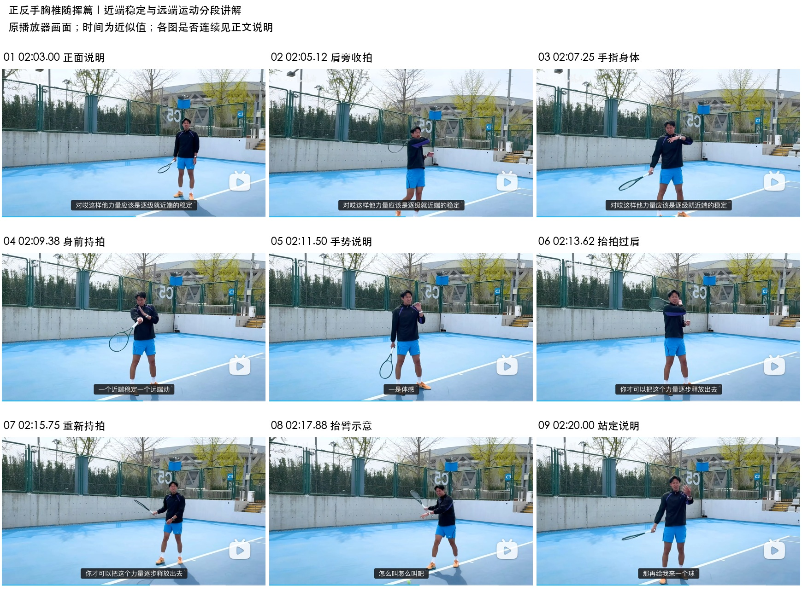
02:27–02:39｜正手再示范：加力后，后面仍有随挥空间
第二次示范先是准备和自行处理手中的球，随后完成一拍正手。讲师重复强调：后面加力时，动作仍有路可走，不要挥到某个位置就卡住。之后又做不带完整来球过程的挥拍说明。
【图 07：同一次正手击球，02:25.50–02:31.00】持球准备、放球、引拍、前挥、球拍上行至头肩附近、收拍回位。
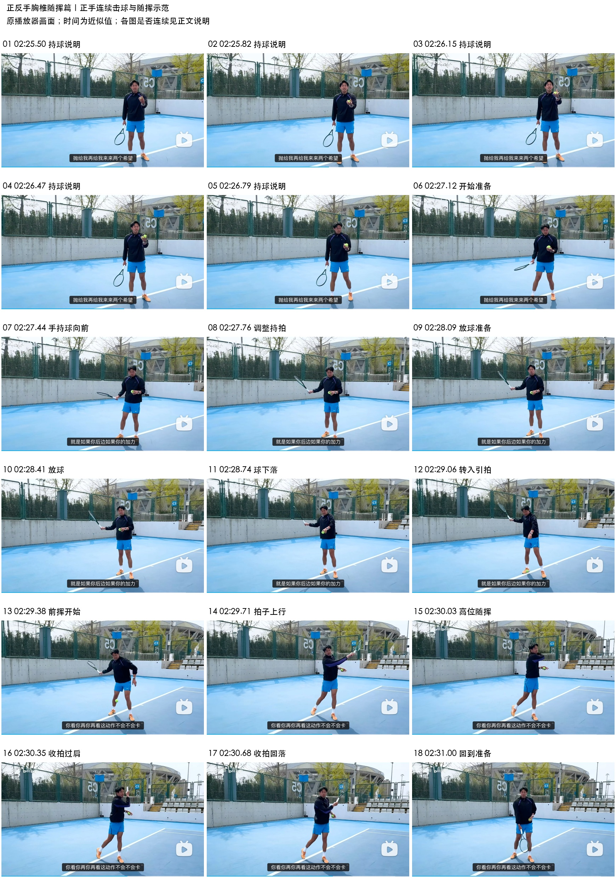
【图 08：后续重复挥拍与转场，02:31–02:39，9 帧】包含另做的示意动作，和图 07 后段时间接续，但不是把两组拼成一次击球。
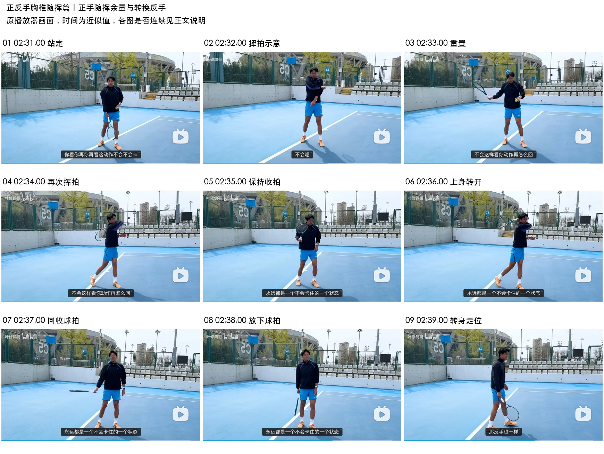
02:39–03:04｜切换反手：左脚击球、落地，抬大臂并让肩出来
镜头转换到另一侧，约 02:40–02:49 主要在走位和调整画面，有局部身体、脚部近景，不是独立完整示范。
随后讲师以双手反拍持拍姿态示范，口令围绕左脚侧的击球、击球后落地、抬大臂以及让肩转出来展开。他说有些人在此前动作中已能抬到一个位置，但剩余随挥仍做不完，可以接上这一段下肢与上身的动作，把随挥继续完成。
【图 09：反手分段示意，02:50–03:04，12 帧】多次从身前持拍转入双反挥拍，球拍抬到头肩旁，再回到准备位置；包含重复动作，不是单拍连拍。
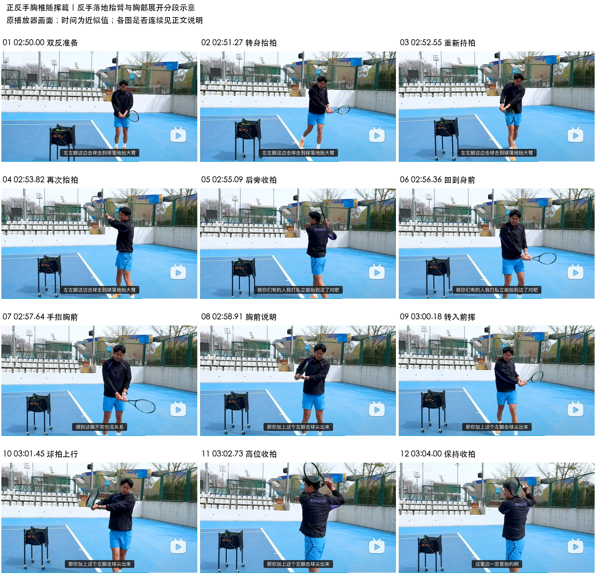
03:04–03:23｜反手重点仍是抬起、胸部展开，别用挺肚子替代
这一段随挥包含抬臂。如果后续做不完，可以对照正手的镜像感觉。他指出右手侧位置并示意大臂外旋，随后让胸椎这一段展开。
他特意演示并区分向后挺肚子的姿态，要求展开的重点放在胸椎，而不是把肚子顶出去。画面里可见他用手指躯干、摆出不同上身姿态，再回到双反持拍。
【图 10：近景分段示意，03:05–03:22，12 帧】依次可见指示身体、抬臂、双手持拍、上身转开、对照后仰姿态，再放下球拍。多次示意之间存在重置。
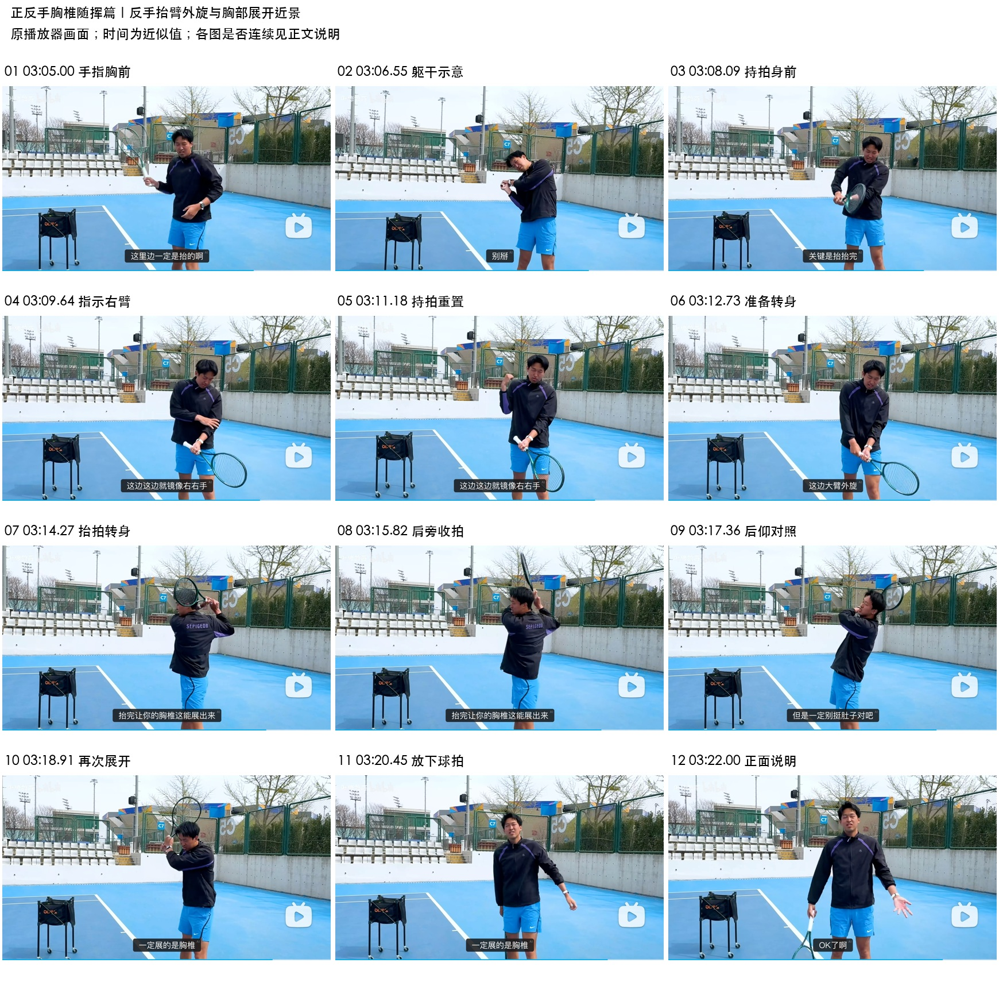
03:23–03:49｜同伴抛球，做两次双反随挥
讲师请同伴再抛球，镜头拉远。第一拍中，他从双反准备位置迎球，挥拍后双手与球拍继续上行，身体随之转开，再收拍回到准备。
之后双方对抛球方向作简短交流；第二次来球与第一拍不同。讲师再次完成双反，并表示示范意思能看懂即可，没有提出新的练习次数或强度要求。
【图 11：同一次双反抛球击球，03:30–03:36，18 帧】前 1–6 帧为等待与来球，7–9 帧可见转入前挥及拍子上行，10–13 帧为高位随挥和转身，14–18 帧回到准备。球拍与球接近的阶段不等于精确触球帧已确认。
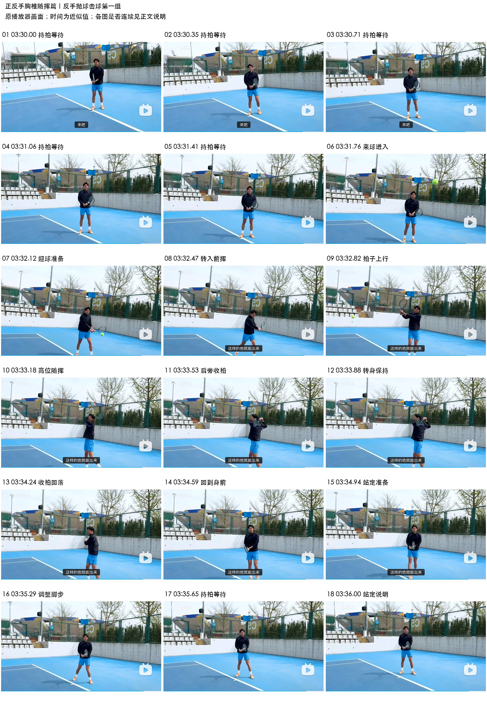
【图 12：另一次双反抛球击球，03:40–03:46，18 帧】前段等待抛球，来球进入画面后转身挥拍，球拍上行并绕到肩旁，最后放下球拍。与图 11 是两次不同击球。
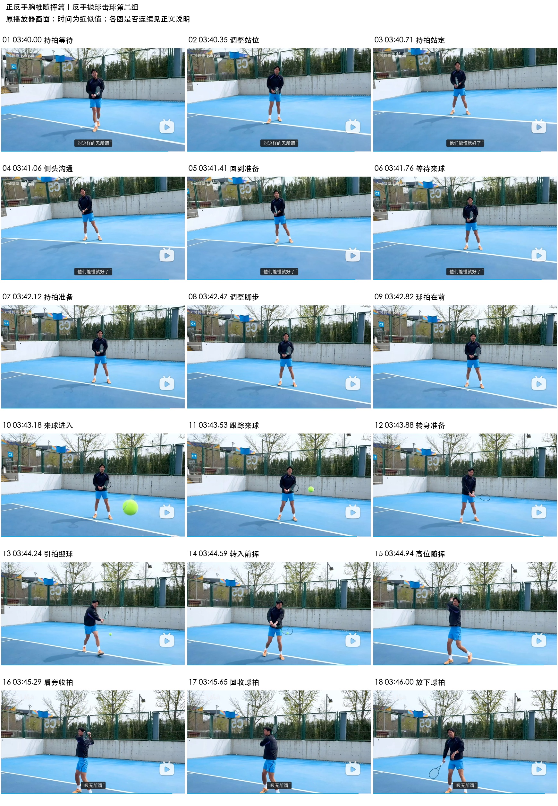
03:49–04:02｜关闭站位也要让后续展开，结尾完成示范
换成关闭的站位，这一处胸部能展开的要求也一样；随后又做了几次挥拍，强调把动作做充分，最后结束本集。末尾出现未说完的短句，没有足够内容可补写成下一项教学结论。
【图 13：关闭站位与结尾重复示范，03:48–04:00，15 帧】包括几次准备、前挥、高位收拍和重置，不是同一次连续击球。图中只能直接观察身体朝向、手臂和球拍位置。
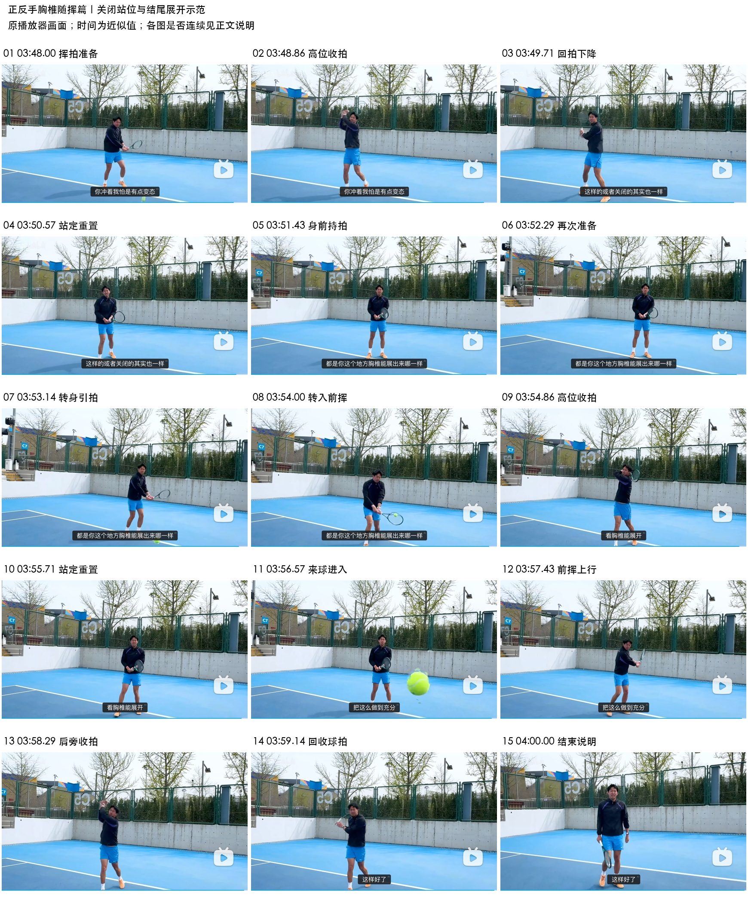